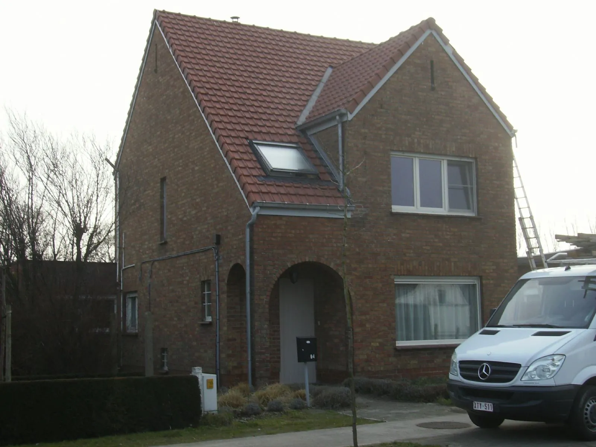
Hellende daken
Nieuwe pannen of leien, een volledige renovatie of een herstelling na een storm. Met zo weinig mogelijk breekwerk.
Pannen, leien, plat dak, zink en koper. We komen eerst kijken, zeggen eerlijk wat nodig is en werken het af tot in de kleinste hoekjes.
Dakwerken Vanderbrugghen is een familiebedrijf. Wat de ene generatie leerde, gaf ze door aan de volgende. Dat merkt u aan de manier waarop we werken: rustig, grondig en zonder omwegen.
U vindt ons op daken van gewone woningen, maar ook op bedrijfsgebouwen en kerken. Nieuwbouw, renovatie of restauratie: we pakken het aan met een ervaren en geschoolde ploeg.
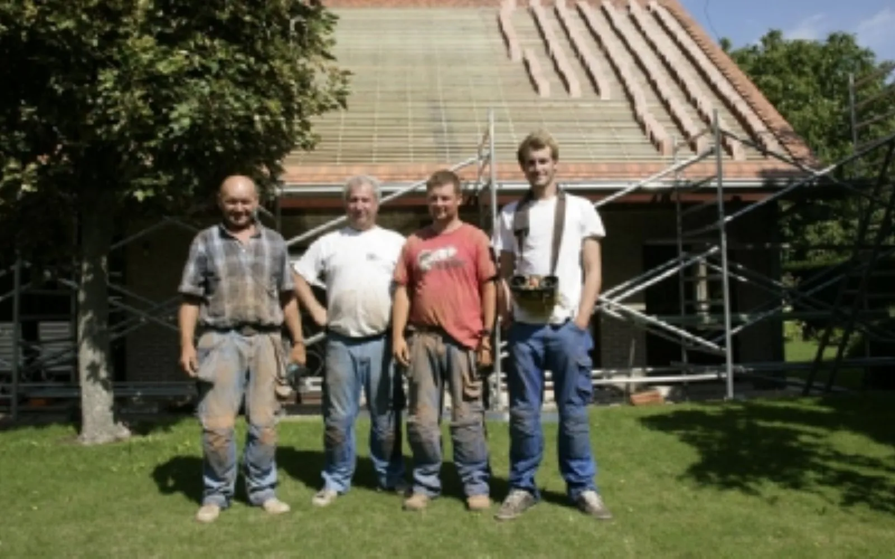
Moeten er eerst rotte onderdelen vervangen worden? Wilt u meteen isoleren? U beslist wat er gebeurt, wij zorgen dat het goed gebeurt.

Nieuwe pannen of leien, een volledige renovatie of een herstelling na een storm. Met zo weinig mogelijk breekwerk.
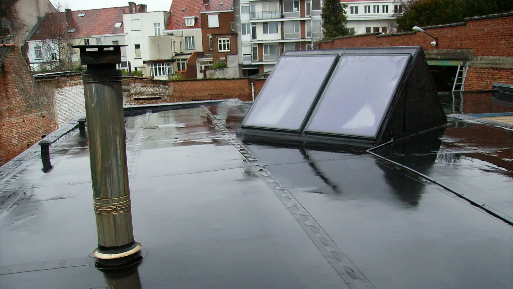
Al jaren onze specialiteit. We werken met Firestone EPDM: soepel, weerbestendig en gemaakt om lang mee te gaan.
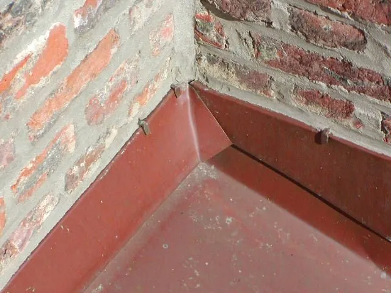
Goten, aansluitingen en afwerkingen rond het dak. Precisiewerk dat je pas opmerkt als het niet goed zit.
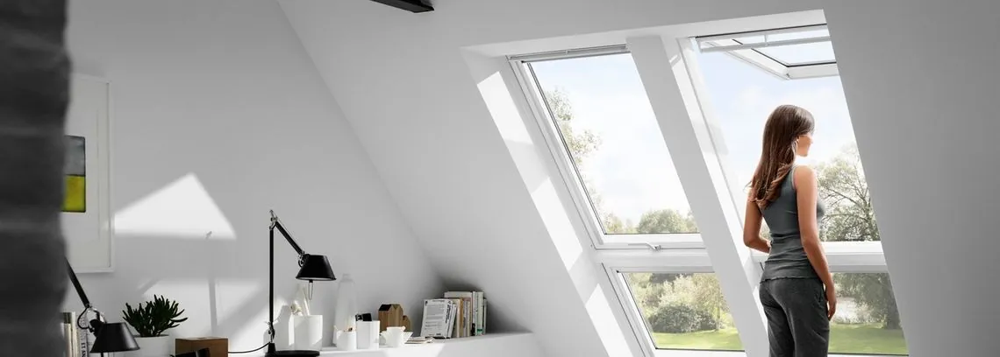
Meer licht onder het dak, geplaatst volgens de regels van de kunst. Ook vervangen van oude ramen.
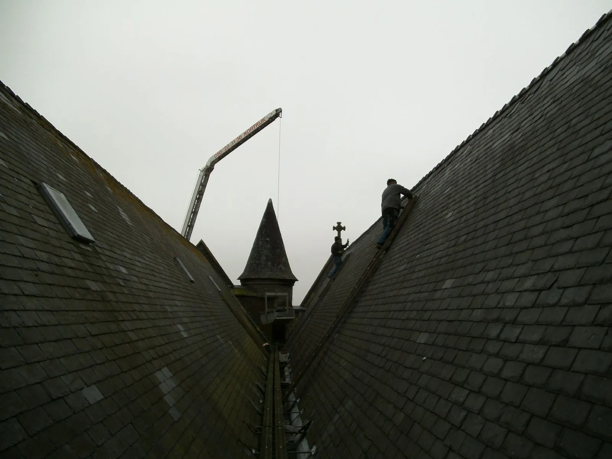
Leien daken, torens en monumenten. Werk waar geduld en ervaring het verschil maken.
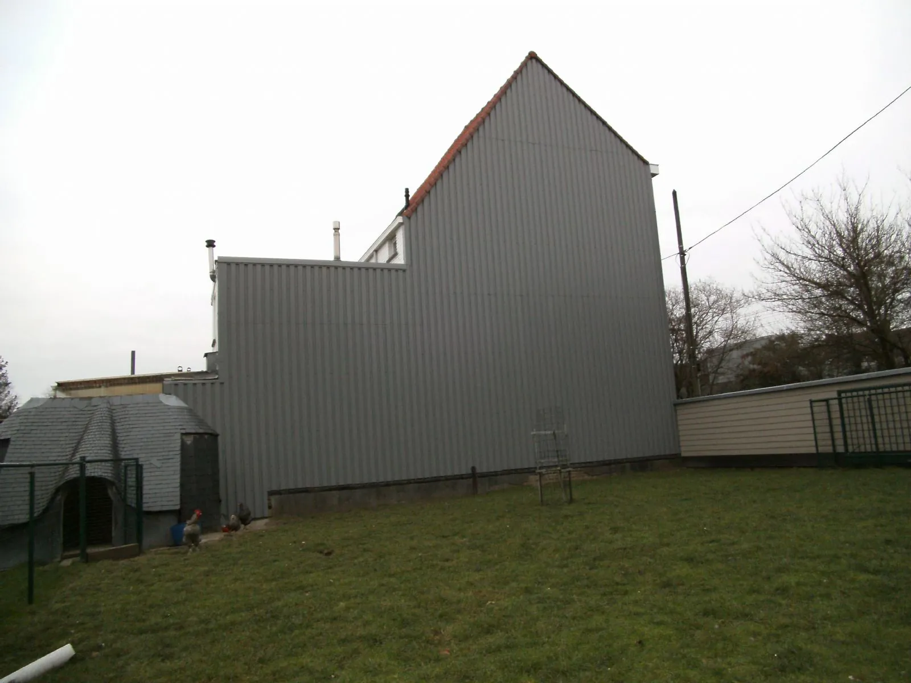
Staalplaten, leien of sidings met een houtstructuur. Een nette gevel die tegen weer en wind kan.
Geen offerte vanop afstand. We komen langs, bekijken alles van dichtbij en zeggen u eerlijk wat er moet gebeuren en wat kan wachten.
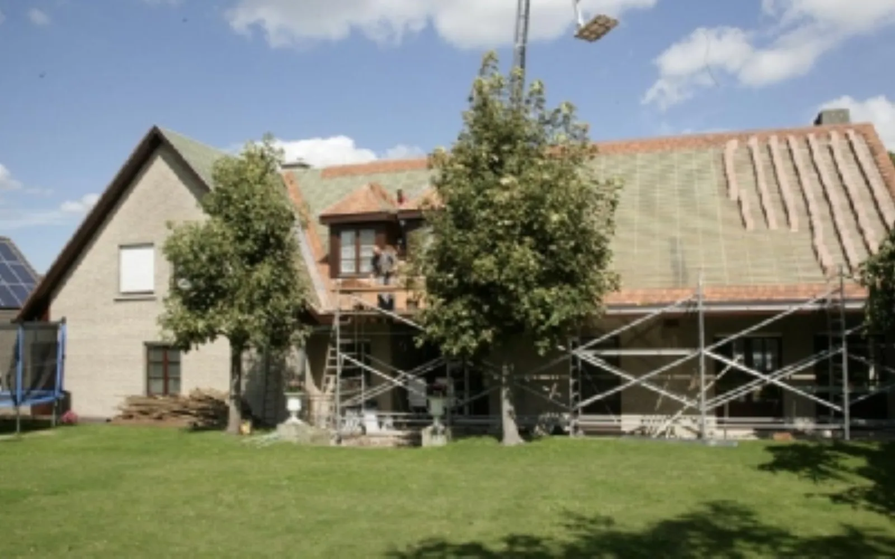
We bekijken het dak, de goten en de aansluitingen. U krijgt een duidelijk beeld van de staat van uw dak.
Rotte balken eerst vervangen? Meteen isoleren? Een vrijblijvende offerte, en u kiest zelf wat er gebeurt.
Tussen offerte en uitvoering houden we ons aan wat we zeiden. Ook in drukke periodes staan we klaar voor dringende herstellingen.
Veilig gewerkt, proper achtergelaten. Achteraf kunt u rekenen op een regelmatige onderhoudsbeurt als u dat wilt.
Van een rijwoning tot een kerktoren. Een greep uit ons werk van de voorbije jaren.
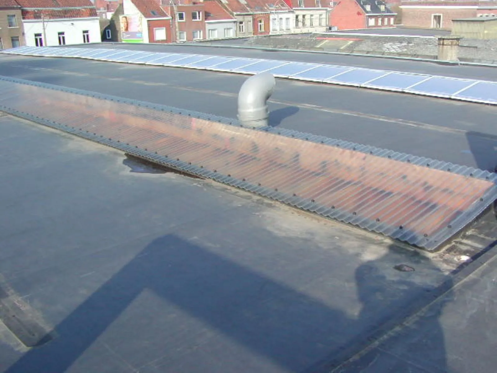
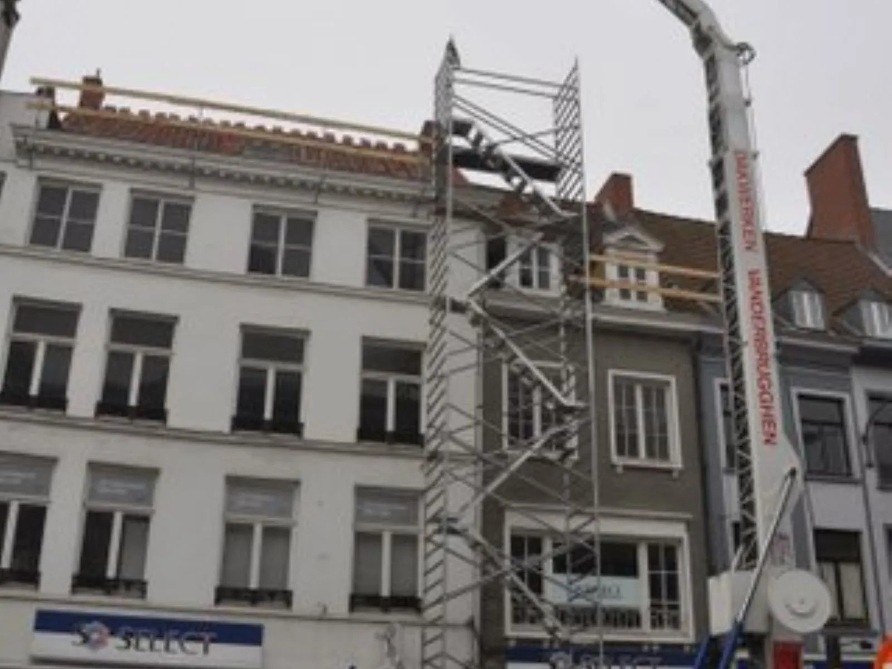
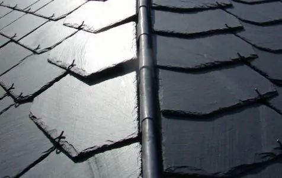
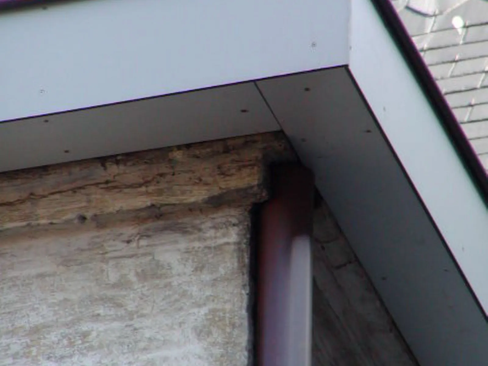
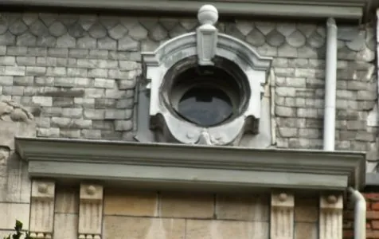
“Heel tevreden over ons nieuw dak klasse wat ze hebben gedaan 👌”Kevin Dreze, via Google
Zeker. Bij een bestaand dak, bij een renovatie en bij nieuwbouw. Vaak is het slim om dat meteen mee te nemen wanneer het dak toch open ligt.
Een soort rubber voor platte daken. Het rekt mee, kan tegen alle weer en gaat lang mee. We plaatsen het al jaren, met materiaal van Firestone.
Bel ons. Ook als het druk is, proberen we dringende herstellingen zo snel mogelijk in te plannen.
Stroken gevelbekleding met een structuur van cederhout. Ze bestaan in verschillende kleuren en vragen weinig onderhoud.
Bel ons, stuur een mailtje of laat hiernaast een bericht achter. We komen graag langs voor een vrijblijvende offerte.
Ik maakte deze demo voor jullie om te tonen wat er kan. Na een kort gesprek maak ik er iets veel persoonlijkers van, helemaal naar jullie wens.
Vrijblijvend. Ik kom langs of we bellen.
Op maat, op jullie eigen domein.
Geen voorschot. Jullie betalen pas als alles klaar is.
Hosting, domeinnaam en kleine wijzigingen, zoals nieuwe openingsuren.
Omdat een voorbeeld meer zegt dan een mail. Zo zien jullie meteen wat er kan, en het kost jullie niets.
Nee. Het gesprek is vrijblijvend. Vinden jullie het niks, dan is het daarmee gedaan.
Na ons gesprek staat jullie site binnen 10 tot 14 dagen online.
Zeker. Jullie domeinnaam kan gewoon blijven, de nieuwe site komt in de plaats van de oude.
Nee, dat doe ik op basis van ons gesprek. Eigen foto's zijn mooi meegenomen, maar niet nodig om te starten.